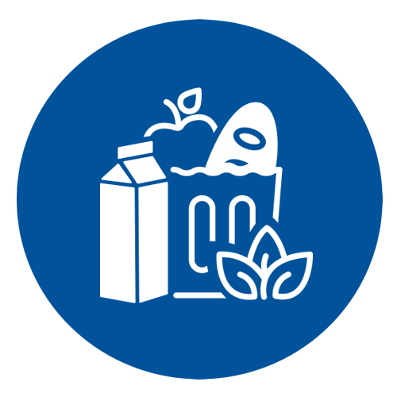

☰

FOOD
TAM Air

The new TAM Air from TA Instruments is a powerful isothermal calorimeter with heat flow sensitivity in the microwatt range and unmatched baseline drift performance. All calorimetric channels are of the twin type, consisting of a sample and a reference chamber. The 8 channel calorimeter will accommodate ampoules with a 20 mL volume. The 3 channel calorimeter will accommodate ampoules with a 125 mL volume. The TAM Air is the recognized instrument of choice in the research and development, as well as quality control process of cement and concrete. With the higher volume ampoules in the 3-channel calorimeter, the TAM Air can also be utilized in food and environmental science applications